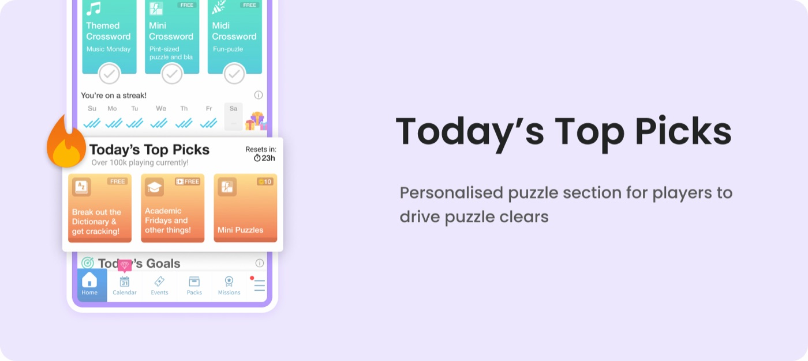

Case study · In-app purchase · UX research
Today's Top Picks
A personalised puzzle section that gave players fresh reasons to play — without ever disrupting their daily streak.

01 — Overview
How it all started.
Daily Themed Crossword is a casual, free-to-play crossword game launched in January 2018. It's since grown to 10M+ downloads and 600k+ daily active users across iOS and Android.
When we launched a 3rd "Today's Puzzle" — a 13×13 grid that takes 5–8 minutes — third-puzzle viewership climbed above 60% across cohorts. But we noticed a side effect: players were so focused on maintaining their streak through the daily puzzles that they stopped engaging with the rest of the catalogue. That's what prompted the investigation.

02 — The problem
A quiet section players kept scrolling past.
After the 3rd daily puzzle shipped, engagement with the featured section fell sharply — and kept decaying as players aged. The gap between the daily puzzles and everything else was stark.
Home-screen engagement by section
Featured-section viewers sat below 25% of cohorts — less than half the reach of the daily puzzle.
Worse, that reach eroded over a player's lifetime — from roughly 23% on day one to 15% by day 360+.

03 — Research
Understanding why players looked away.
I paired the quantitative drop-off with qualitative research to understand the why behind the numbers — starting from who our players actually are.

Hypotheses — why engagement was low:
- The featured puzzles didn't feel as gratifying as the daily puzzle, which had a streak tied to it.
- The section felt disconnected from the set of puzzles — hard to choose from the list.
- It lacked the sense of daily freshness, and didn't read as free-to-play.
- Labels like "bonus archive" or "themed archive" weren't familiar or exciting.
- Overall the section simply looked dull — weak motivation to tap in.
“It could be tiring to finish two 13×13 puzzles and a mini in a row — players may simply need a break here, and there was no streak or reward pulling them further.”
So the goal became clear: boost puzzle engagement without disrupting the "Today" puzzle that players already loved. To get there, I looked outward — studying how comparable word games surface variety on their home screens.


04 — The solution
A rebrand with intent, not just a reskin.
"Today's Top Picks" reframed the tired "featured puzzle" as a fresh, themed presentation on the home screen — giving players a clear, appealing reason to play beyond the daily grind, while leaving the streak-driven daily flow untouched.

UX principles baked into the final design:

05 — Outcome
A pattern good enough to reuse.
The rebranded section lifted engagement with non-daily puzzles and gave players fresh reasons to return — validating the bet that presentation and framing, not just content, drove the drop-off.

We went on to introduce an "expert puzzle" and several other categories presented the same way — turning a single fix into a reusable home-screen pattern.

A huge shout-out to the team, PMs and game artists who brought this to life. 🥳